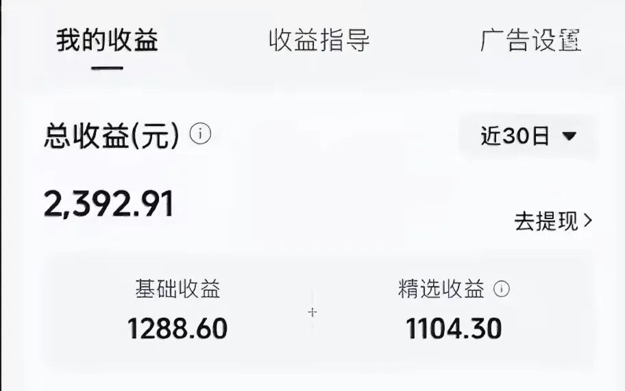

影视行业需要一次变天
来源:
太阳照常升起
发布时间:
2026-05-17
原文链接:
https://mp.weixin.qq.com/s/vlZkNEm39klNQLYkrLm66w
作者不是影视业圈内人，只是一名普通的观众。
这两天看到有制片人和导演在抖音上吐槽，一些大影视城的群演曾经常驻几十万，如今十人九去，留下的，也接不到多少工作。
AI替代，是今年以来最热门的话题。然而，问题真的出在AI替代吗？
大量的微短剧都是资方主导的，各种霸总、狗血、逆袭、反转、打脸，无下限就是入门认证。平台懒得管内容，只看播放数据，数据好流量多，广告收益就多。所以冲短期数据就行了。资方、MCN、版权方联合，打着“合规”、“专业”的旗号，唯一优势可能就是去快速地走备案流程。那这种所谓“合规”、“专业”带来的是什么呢？是影视垃圾，是屎山短剧，是不断欺压那些对优质影视剧有真正追求的年轻人。
资方、MCN和屎山版权方真明白AI时代是个什么东西吗？一看有可灵用了，有Seedance 2.0用了，就开始大量清理真人。AI短剧疯狂上线，屎上叠屎，屎上雕花。
屎这个字是真脏，但比起现在的影视圈，那是真干净。
AI不是问题，优质的AI短剧也在风靡，问题根本不在AI，不在工具，而在影视行业本身。
无脑微短剧不但祸害本土，还要出口海外，美其名曰“文化出海”。这是什么时候的文化？是老祖宗的文化？是传统文化？是消费者真正需要的文化？
无脑短微剧也配叫“文化出海”吗？那明明是“精神鸦片出海”。
你说你出海的目的是为了毁坏海外竞争对手的精神力，那可能还多少算个理由
大家都是老登，谁不知道彼此内心有多肮脏？非要把这个世界搞残才开心吗？你是无后吗？还是无后呢？
消费者傻吗？观众傻吗？如果他们真傻，为什么五一的大量排片无人观影，
《给阿嬷的情书》
却能靠人传人的口碑逆袭呢？
为什么垃圾微短剧遍地，AI替代无数，最后火起来的却是一眼封神的
Enemy
呢？
影视圈天天生产屎，观众只能在咖喱味的屎和鱼香味的屎之间做选择，于是平台数据显示，所有观众都爱吃屎。
那是因为观众爱吃吗？他们曾经吃过吗？难道不是因为他们没有选择吗？但凡他们有任何选择，还会没事把二十年前的经典剧拿出来三刷、四刷、五刷、六刷吗？
不是想否定一切，就是讲一讲一名观众的真实感受，不准备代表大家，只代表自己。
作者忍不住今天开喷，是因为看到
Enemy
的主创@煎饼果仔（张问初）前几天在微博挂出的一个平台流量收益图。
Enemy-民国篇
在抖音的播放量8.4亿，张问初和夏天的账号，据说全网播放量超过50亿，那抖音平台给出的近30日的月收益是多少呢？

太恶心了，播放几十亿，一个月的流量收入才2,400元不到。这个平台的流量收入，真的太恶心了。
作者就是随手每天写一篇文章，在公众号不出10天，流量收益都比他们多。你但凡看过他们拍的微短剧，就知道制作多么用心，过程多么辛苦，剧情多么优质，内容多么精良。
无论是院线还是互联网平台，流量和分配都导向影视行业（无论电影、中长网剧还是微短剧）的工业生产线，资方、MCN和版权方把控一切，除了推出个别网红脸、搞饭圈文化，把整个影视行业搞得乌烟瘴气，就是对那些真正有初心的影视业年轻人从制度上进行无尽的压榨。
不认可这条屎上叠屎工业生产线的煎饼果仔和夏天，不接资方投资、不入MCN怀抱，就自己按个人账号去播放，于是，流量收入就低到不能再低。
这是个什么流量价值导向？是专门跟观众做对吗？
你不要讲他们还有收费版本。收费版本是粉丝主动介绍他们才知道的，那相当于铁粉对他们的认可，但收入也才150多万。这150多万，还有平台分成，还有税，再分给剧组的打工人，最后还有多少呢？
我们每天讲年轻人是未来，年轻人要有冲劲，年轻人不能躺平。但如果年轻人的所有努力，所有不甘，所有不愿被老登“收租”、“剥削”，最后就变成收获鲜花掌声却没有收益，那还有多少年轻人会去奋斗呢？
站在平台视角，应当从最近半年乃至一年整个社会心态的变化，看到最广大消费者对文化产品的需求正在发生质变。传统、精品、内容深刻、制作精良、贴近老百姓，才是真正的永恒。
垃圾总有看厌烦的一天，饭圈已经是神经病的聚集地，沉默的大多数，也有忍不住站出来的一天。真正有消费能力的人，对精品的追究是永恒的。平台要挣钱，要有利润，这都没有问题，但平台应当认识到未来真正更有收益的部分在哪里。
屎上叠屎，没有未来。
作者不是质疑派，也不是提问派。这篇文章，直接扔给字节。你不想屈服于规则，那就去改变规则。作者已经老登尚且如此，年轻人，就更要有年轻人的样子。
以上。
看不惯老登的世界，就去创造你们自己的世界，欢迎加入作者的知识星球！